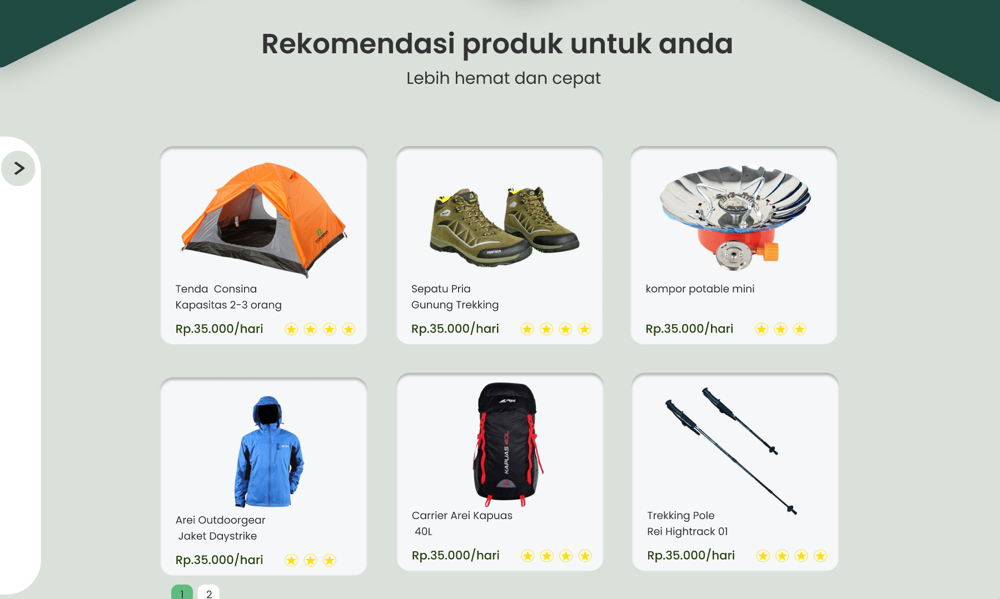
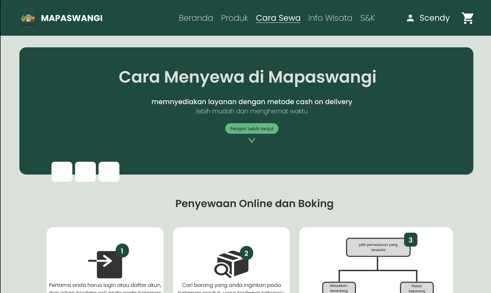
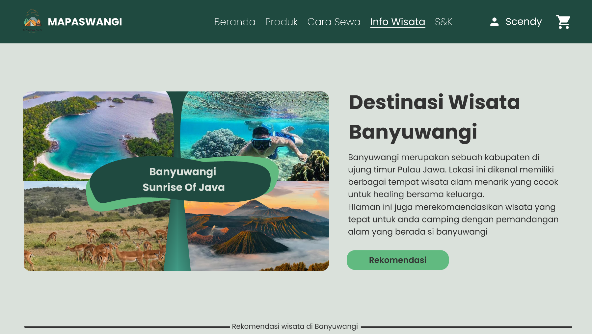

MAPASWANGI
Design UI/UX Website
Project Overview
MAPASWANGI is a UI/UX design project for a web platform that helps users explore camping equipment through an interactive and map-based experience. The design emphasizes clarity, usability, and a nature-inspired visual theme to create an intuitive experience for outdoor enthusiasts.
Key Features
- Interactive map interface for camping equipment
- Detailed gear catalog with descriptions and specifications
- Search and filter functionality by type, location, and category
- User-friendly navigation with clean layout
Project Gallery

Product Catalog

Rental Method

Destination